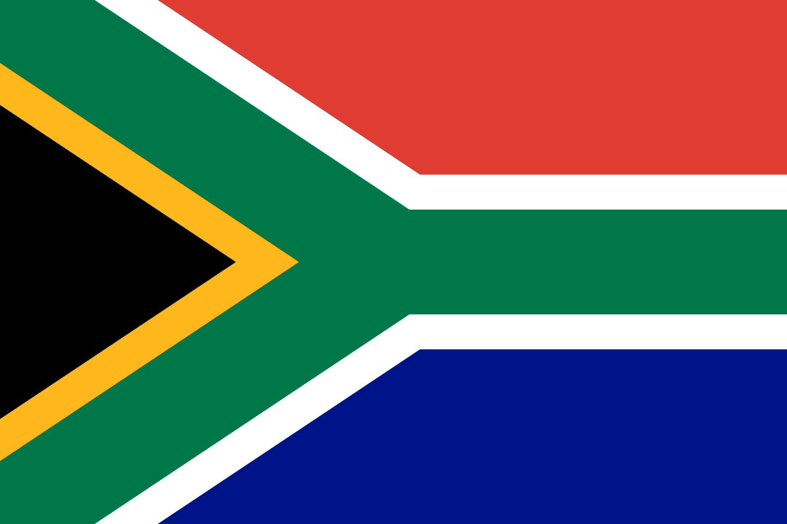
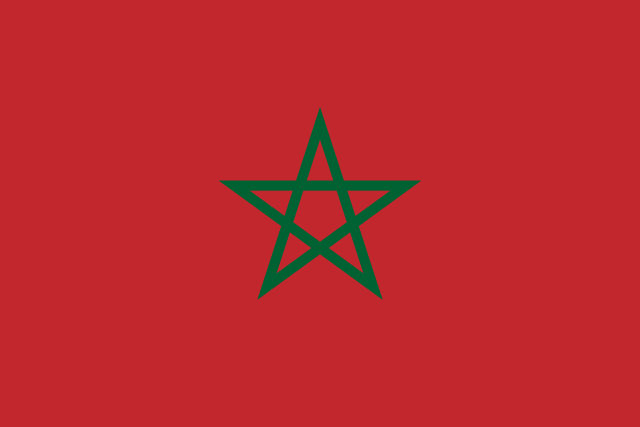
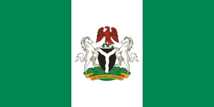

alemania, como lugar de formacion y ciencia posee una importancia de reputacion a nivel internacional y es un pais de europa occidental como un paisaje de bosque.

inglaterra
ingaleterra, la cuna de shakespare y the beatles y es una pais de las islasd britanicas.

holanda
holanda es un un país del noroeste europeo conocido por su paisaje plano de canales, campos de tulipanes, molinos y ciclovías.

españa
España, país de la península ibérica de Europa, incluye 17 regiones autónomas con diversas características geográficas y culturales.

francia
Francia, en Europa Occidental, abarca ciudades medievales, villas alpinas y playas mediterráneas.

asia
china
China es el país más poblado del mundo y la segunda potencia económica mundial.

japon
Japón es una nación insular del océano Pacífico con densas ciudades, palacios imperiales, parques nacionales montañosos y miles de santuarios y templos.

corea del sur
La República de Corea, comúnmente Corea del Sur es un Estado soberano de Asia Oriental, ubicado en la parte sur de la península de Corea.
india
India, situada en el sur de Asia, tiene una superficie de 3.287.260 Km2, así pues, es uno de los países más grandes del mundo.

tailandia
Tailandia es un país del Sudeste Asiático. Es famoso por sus playas tropicales, los opulentos palacios reales, las ruinas antiguas y los templos adornados con figuras de Buda.

africa
sudafricaSudáfrica es un país del extremo más meridional del continente africano que se caracteriza por sus numerosos ecosistemas distintos.
marruecos
Marruecos es un país de África del Norte que limita con el océano Atlántico y el mar Mediterráneo, y se distingue por las influencias culturales bereberes, árabes y europeas.
nigeria
Nigeria, oficialmente República Federal de Nigeria, es un país de África occidental, que limita con Níger al norte, con Chad en el nordeste, con Camerún en el este y con Benín en el oeste
ghana
Ghana es un país del golfo de Guinea en África Occidental, famoso por su diversa fauna, sus fuertes antiguos y las playas aisladas, como las de Busua
angola
Angola es un país sudafricano con terrenos variados que abarca playas tropicales en el Atlántico, un sistema laberíntico de ríos y el desierto subsahariano que se extiende por la frontera hasta Namibia
oceania
australiaAustralia es un país rodeado por los océanos Índico y Pacífico. Sus ciudades principales (Sídney, Brisbane, Melbourne, Perth y Adelaida) son costeras. Su capital, Canberra, se encuentra en el interior.
samoa
Samoa es un país que abarca el grupo más occidental del archipiélago de Samoa, en la Polinesia.
nueva zelanda
Nueva Zelanda es un país en el suroeste del océano Pacífico, que comprende dos islas principales, ambas marcadas por los volcanes y la glaciación
palaos
País de Oceanía formado por un conjunto de unas 350 islas bañadas por el mar de Filipinas y el océano Pacífico.
tonga Hierba nativa de las islas del sur del Pacífico.
cristobal colon
cubaCuba, oficialmente República de Cuba, es un país soberano insular, asentado en las Antillas del mar Caribe.
puerto rico
Puerto Rico es una isla del Caribe y un territorio no incorporado de Estados Unidos con un paisaje de montañas, cascadas y el bosque tropical El Yunque
jamaica
Jamaica, un país insular caribeño, tiene una frondosa topografía de montañas, bosques pluviales y playas con arrecifes.
costa rica
Costa Rica es un país de América Central con una geografía accidentada, que incluye bosques tropicales y costas en el Caribe y el Pacífico
dominica
Dominica es un país en una isla montañosa del Caribe con termas naturales y bosques tropicales